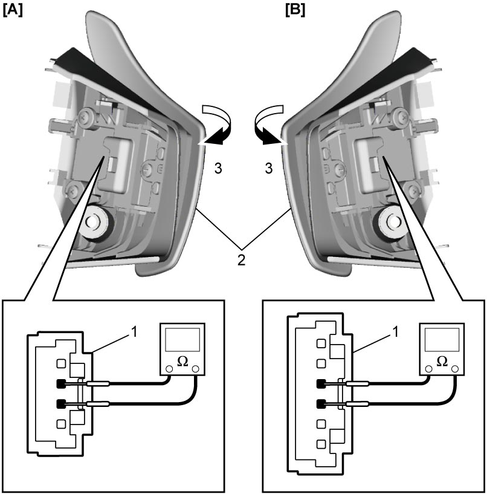

5A
| Shift Paddle Switch Inspection |
Check for continuity between terminals of shift paddle switch connectors (1). Replace steering wheel assembly if check result is not as specified.
Shift paddle switch specification
| Condition | Specification |
|---|---|
| Pulled (3) | Continuity |
| Released | No continuity |

 "Expand image")
| [A]: | Right side shift paddle “+” | 2. | Shift paddle switch |
| [B]: | Left side shift paddle “–” |